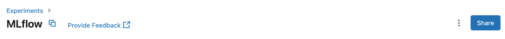
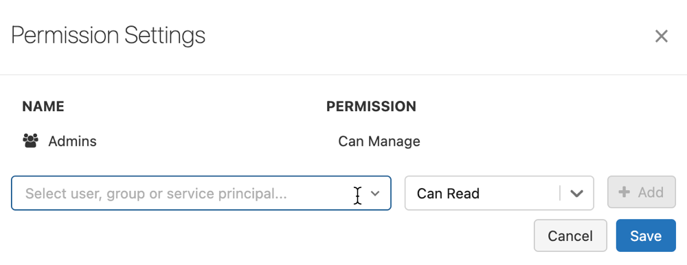

Share experiments
This page describes how to share MLflow experiments with users, groups, and service principals in your workspace.
Note
Access control is available only in the Premium plan or above.
MLflow Experiment permissions
You can assign four permission levels to MLflow experiments: No Permissions, Can Read, Can Edit, and Can Manage. The table lists the abilities for each permission.
Note
You cannot directly set permissions on an MLflow experiment that was created by a notebook in a Databricks Repo. The permissions set at the Repo level control access to experiments created by notebooks in the Repo.
Ability |
No Permissions |
Can Read |
Can Edit |
Can Manage |
|---|---|---|---|---|
View run info search compare runs |
x |
x |
x |
|
View, list, and download run artifacts |
x |
x |
x |
|
Create, delete, and restore runs |
x |
x |
||
Log run params, metrics, tags |
x |
x |
||
Log run artifacts |
x |
x |
||
Edit experiment tags |
x |
x |
||
Purge runs and experiments |
x |
|||
Modify permissions |
x |
Workspace admins have the Can Manage permission on all experiments in their workspace. Users automatically have the Can Manage permission for experiments they create.
Note
Experiment permissions are only enforced on artifacts stored in DBFS locations managed by MLflow. For more information, see MLflow Artifact permissions.
Create, delete, and restore experiment requires Can Edit or Can Manage access to the folder containing the experiment.
You can specify the Can Run permission for experiments. It is enforced the same way as Can Edit.
Configure MLflow experiment permissions
This section describes how to manage permissions using the Databricks workspace UI. You can also manage permissions using the Permissions API or the Databricks Terraform provide.
You must have the Can Manage permission on the file in order to manage permissions on it.
Click the Experiments in the sidebar.
Click an experiment name.
Click Share. The Permission Settings dialog appears.
In the dialog, click the Select User, Group or Service Principal… drop-down and select a user, group, or service principal.
Select a permission from the permission drop-down.
Click Add.
If you want to remove a permission, click for that user, group, or service principal.
Click Save.
MLflow Artifact permissions
Each MLflow Experiment has an Artifact Location that is used to store artifacts logged to MLflow runs. Starting in MLflow 1.11, artifacts are stored in an MLflow-managed subdirectory of the Databricks File System (DBFS) by default.
MLflow experiment permissions apply to artifacts stored in these managed locations, which have the prefix dbfs:/databricks/mlflow-tracking. To download or log an artifact, you must have the appropriate level of access to its associated MLflow experiment.
Note
Artifacts stored in MLflow-managed locations can only be accessed using the MLflow Client (version
1.9.1or later), which is available for Python, Java, and R. Other access mechanisms, such as dbutils and the DBFS API, are not supported for MLflow-managed locations.You can also specify your own artifact location when creating an MLflow experiment. Experiment access controls are not enforced on artifacts stored outside of the default MLflow-managed DBFS directory.